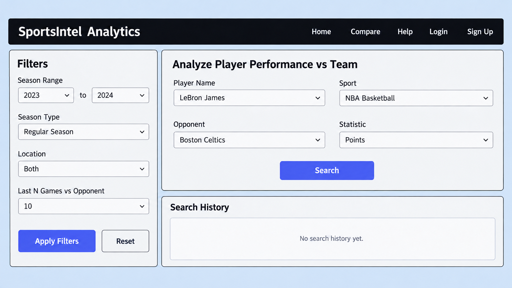
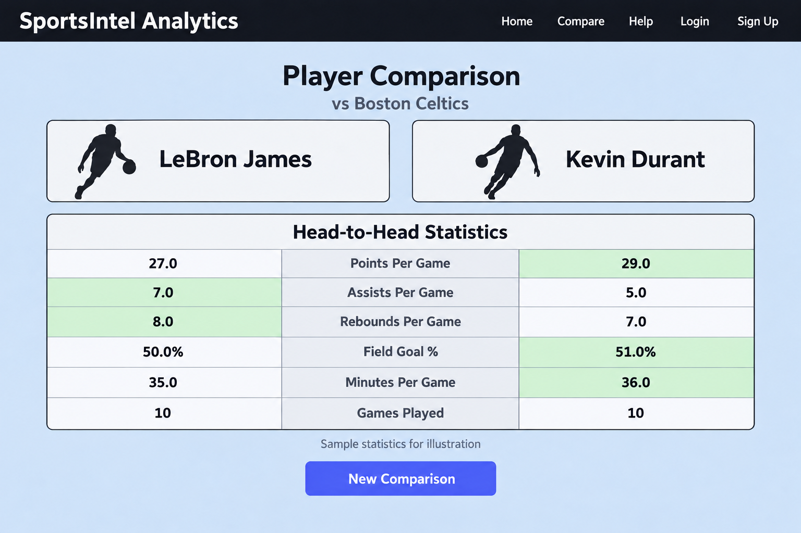

SportsIntel
An NBA player statistics desktop application for exploring game logs, analyzing performance, and comparing players.
Status: Completed
Project Type: Team Software Development Project
My Role: Backend / API
← Back to Selected WorkProject Overview
SportsIntel brings NBA player statistics and comparisons into one desktop application. Users can search for a player and narrow results by season, opponent, game location, and recent games.
We completed the application as a team software development project. It combines a JavaFX interface with a Python backend that retrieves and processes NBA statistics.
The application helps basketball fans review recent performance, investigate results against a particular opponent, and compare two players across matching statistical categories.
My Contribution
I worked on the backend and API portion of SportsIntel. My work focused on connecting the desktop application with NBA statistics and processing data for searches and comparisons.
The team used Scrum, with a project backlog and sprint tasks tracked through GitHub Issues. Regular stand-ups covered progress, upcoming work, and blockers.
Main Features
- Search for NBA players and retrieve their game logs.
- Filter by season range, regular season or playoffs, opponent, home or away games, and last number of games.
- Explore averages, high and low games, and recent performance summaries.
- Review points, assists, rebounds, shooting percentages, steals, blocks, turnovers, minutes, and plus/minus.
- Compare two players side by side.
- Register, sign in, and access saved search and comparison history.
Technologies
- Java and JavaFX: Desktop interface and application controls.
- FXML and CSS: Screen layouts and visual styling.
- Python and Django REST Framework: Backend search, game log, and comparison endpoints.
- nba_api and pandas: NBA statistics retrieval and data processing.
- Firebase Authentication and Firestore: User accounts and stored history.
- Maven and GitHub: Dependency management, version control, and task tracking.
How It Works
- The user enters a player name and selects filters in the JavaFX interface.
- The desktop application sends an HTTP request to the Django backend.
- The backend retrieves NBA data, applies filters, and calculates summaries.
- The backend returns the results as JSON.
- The desktop application displays the statistics and comparisons.
The backend handles data retrieval and processing, while the desktop application handles user input and the presentation of results.
Interface Preview
Player Search

Search for a player and filter statistics by season, opponent, game location, and recent games.
Player Comparison

Compare two players across points, assists, rebounds, shooting percentage, and minutes. Statistics shown are illustrative.
Project Outcome
The completed project combines player searches, statistical summaries, account access, and comparisons in one desktop application. It gave me experience developing API endpoints, processing external data, and coordinating backend work with a team.